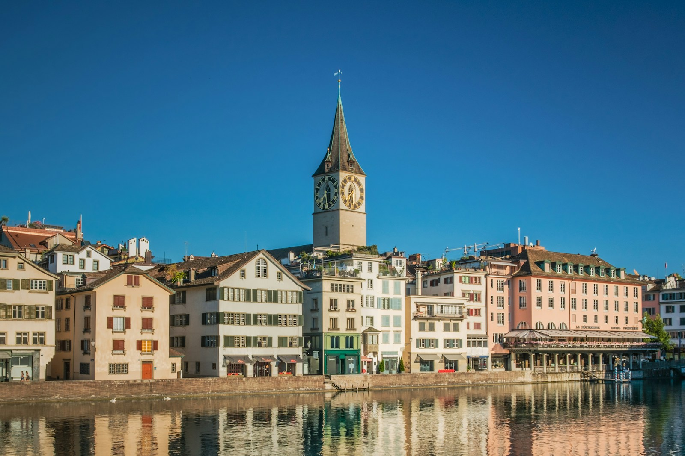

Flights from India to Switzerland
Chapter 3
Flights from India to Switzerland
Overview
Several airlines operate flights from major Indian cities to Switzerland. The primary international airport in Switzerland is Zurich Airport (ZRH), followed by Geneva Airport (GVA) and EuroAirport Basel-Mulhouse-Freiburg (BSL).
Major Airlines Operating from India
| Airline | From India | To | Stops | Duration |
|---|---|---|---|---|
| Swiss International Air Lines | Delhi, Mumbai | Zurich | Direct | 8-9 hours |
| Lufthansa | Delhi, Mumbai, Bengaluru | Zurich, Geneva | 1 stop | 11-14 hours |
| Emirates | Delhi, Mumbai, Bengaluru, Hyderabad, Chennai | Zurich, Geneva | 1 stop (Dubai) | 12-15 hours |
| Qatar Airways | Delhi, Mumbai, Bengaluru, Hyderabad, Chennai | Zurich, Geneva | 1 stop (Doha) | 12-15 hours |
| Etihad Airways | Delhi, Mumbai, Bengaluru, Hyderabad | Zurich, Geneva | 1 stop (Abu Dhabi) | 12-15 hours |
| Air France | Delhi, Mumbai | Zurich, Geneva | 1 stop (Paris) | 12-14 hours |
| British Airways | Delhi, Mumbai, Bengaluru, Chennai | Zurich, Geneva | 1 stop (London) | 13-16 hours |
Direct Flights from India
Swiss International Air Lines operates direct flights from Delhi (DEL) and Mumbai (BOM) to Zurich (ZRH). These direct flights take approximately 8-9 hours, making them the fastest option for Indian travelers.

Zurich city and Lake Zurich - the largest city and economic hub of Switzerland | Image: Unsplash (Tomi Blasic)
Flight Duration from Major Indian Cities
| Departure City | Direct Flight | With 1 Stop |
|---|---|---|
| Delhi | 8-9 hours | 11-13 hours |
| Mumbai | 8-9 hours | 11-13 hours |
| Bengaluru | N/A | 12-15 hours |
| Hyderabad | N/A | 12-15 hours |
| Chennai | N/A | 13-16 hours |
| Kolkata | N/A | 14-17 hours |
Best Booking Websites
- Official Airline Websites: Swiss.com, Lufthansa.com, Emirates.com
- Online Travel Aggregators: Skyscanner, Google Flights, Kayak, Momondo
- Indian OTAs: MakeMyTrip, Yatra, EaseMyTrip, Cleartrip
Money-Saving Tips for Flights
Save Money on Flights
- Book flights 3-4 months in advance for the best prices.
- Use incognito mode when searching for flights to avoid price hikes.
- Consider flying to nearby airports like Milan or Geneva and taking a train.
- Mid-week flights (Tuesday-Thursday) are usually cheaper than weekend flights.
- Set price alerts on Skyscanner or Google Flights.
- Consider connecting flights via Middle Eastern hubs for lower fares.
- Travel during shoulder season (April-May, September-October) for cheaper flights.
Approximate Round-Trip Airfare
| Class | From Delhi/Mumbai (Direct) | From Delhi/Mumbai (Connecting) | From Other Cities |
|---|---|---|---|
| Economy | ₹50,000 - ₹90,000 | ₹35,000 - ₹60,000 | ₹40,000 - ₹75,000 |
| Premium Economy | ₹80,000 - ₹1,20,000 | ₹65,000 - ₹1,00,000 | ₹75,000 - ₹1,15,000 |
| Business Class | ₹1,50,000 - ₹2,50,000 | ₹1,20,000 - ₹2,00,000 | ₹1,40,000 - ₹2,30,000 |